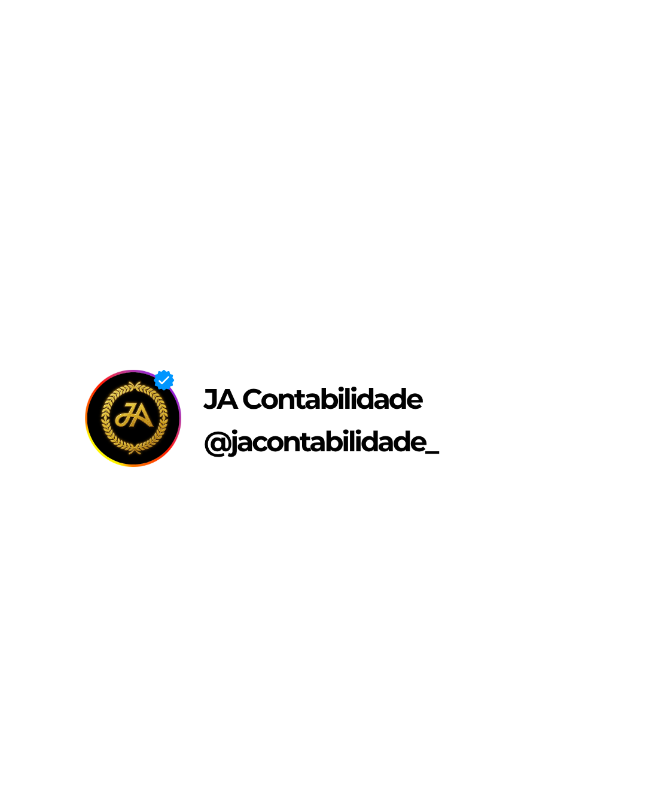

SEU VOTO PARA
Número:
Aperte a tecla:
VERDE para CONFIRMAR
LARANJA para CORRIGIR
BRANCO
CORRIGE
CONFIRMA
Apuração · 2º turno
seções apuradas
87,31%
A
Candidato A
0,0%
B
Candidato B
0,0%
Quem vence? ?
Sua empresa
CNPJ 12.345.678/0001-90
A
Se A vencerImpostos do mês
R$ 0
B
Se B vencerImpostos do mês
R$ 0
Mesma carga, seja quem for.
NF-e
Nº 000.482
Errada
Dívidas
Débitos em aberto
Não identificadas
Federais?
Estaduais?
Municipais?
Esperar a política resolver?
Aguardando… previsão: indefinida
Não adianta
Seu caixa
saldo disponível
R$ 48.900
−75% no mês
Planejamento tributário
Vencedor:
A
Empresa preparada
JA Contabilidade e Perícia
Especialistas em
Carga tributária
Apuração ao vivo
Sem planejamento
Com planejamento

@jacontabilidade_
JA Contabilidade e Perícia
Link na bio